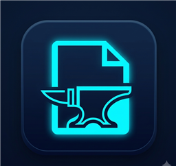

Readability + Turndown
Main-content extraction, then tight Markdown. Not a kitchen-sink clipper.

ContextForgeLocal-first context engine
Local-first Chrome/Edge extension and MCP server. Extract readable context for ChatGPT, Claude, Gemini, Cursor — on your device unless you opt into cloud.
Main-content extraction, then tight Markdown. Not a kitchen-sink clipper.
Live ~4-char token budget so you know what you paste into a model.
Extracts stay on device. Only the last extract is persisted, and license checks are opt-in.
stdio server for Cursor and Claude Desktop: HTML or URL → Markdown.
This public beta uses manual installation. It is not on the Chrome Web Store or Microsoft Edge Add-ons. Do not look for “Add to Chrome” in the stores.
contextforge-v1.0.0.zip). Optional:
SHA-256 checksum.
manifest.json in that
folder (not only inside a nested archive).
chrome://extensions (Chrome) or
edge://extensions (Edge).
manifest.json.
Restricted pages such as chrome:// and some PDFs cannot be
extracted. Need help?
GitHub Issues
(no telemetry).
Building from source requires Node.js 22.12+. Clone the repo, then
npm ci → npm run build. Load unpacked from
chrome-extension/. MCP: point Cursor or Claude Desktop at
node mcp-server/dist/index.js (see
examples/mcp.json).
Free
Extract, copy, and keep the last result locally. Forever.
No account. No telemetry required.
Pro
Prompt packing in the extension, validated with a license key by the ContextForge license Worker.
Pro licensing is not open yet. Everything on the Free tier keeps working without a key.
Point Cursor or Claude Desktop at
node mcp-server/dist/index.js. See
examples/mcp.json. Tools:
html_to_markdown and fetch_web_page
(http/https only, 20s timeout, 5 MB cap).